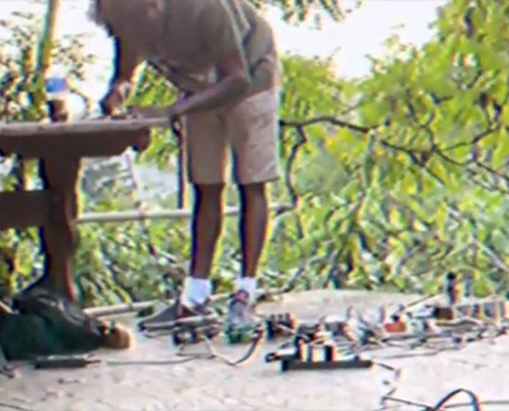

https://shaneanthony1.bandcamp.com/
The Universe Online is the music project of Shane Anthony. A glitchy,pulsating,shifting ghost that channels the spirits of the digital world.
Often tracks sound as if they are a CD skipping or a bad Bluetooth connection,but alas; it is a portrayal of Glyphs shifting, the universe shaking, outer space expanding.
With over 33 albums, there's no shortage of material over the past seven years.
Not to be easily categorized, The Universe Online has experimented with R and B, indie rock, and hip-hop influences.